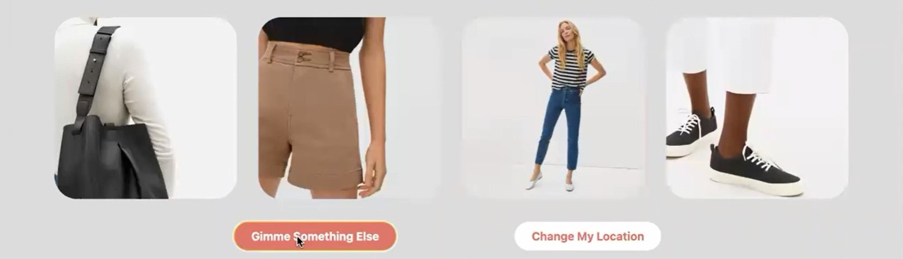

Projects
Here's an overview of my past projects and what I'm working on now!

IN PROGRESS - Computational Methods for Design and Discovery Lab
MOS Cell Simulator
My research project consists of using a systematic graph approach to simulate MOSFET circuits and discover efficient cell configurations. The C++ program first reads a file of transistor netlists and, for each, performs levelization on the netlist to determine the order in which to simulate the wires. If levelization is successful, simulation is performed through an adjacency list and Depth First Search to determine the truth table.
In addition, I explored patterns regarding what makes one cell superior to another by comparing circuits that implement the same logic function. The broad goal is to apply this approach to not only MOS transistors but also new emerging devices that we don't know as many good designs for.
2022 - EE109 Embedded Systems
Thermometer Display
= a dial-type thermometer that indicates the temperature from a local or remote sensor. Data is transmitted through the 1-Wire bus between a DS18B20 temperature sensor and Arduino. The temperature is displayed on the LCD screen, and a servo motor operates with a PWM signal to point in the corresponding direction. Pushbuttons allow you to select "local" or "remote." The user can use a rotary encoder to set a temperature threshold, which is stored in the EEPROM memory. LEDs and a buzzer indicate if the local temperature is "cool," "warm," or "hot."
SERIAL INTERFACE (TX/RX): to transmit or receive remote temperature from another Arduino in @+123# format. A tri-state buffer was used to isolate the incoming data for the RX input while the Arduino is being programmed.
★ Coded in C with timers and interrupts
2022 - AthenaHacks collaborative project
"WeatherWear"
WeatherWear will help you decide what clothes you want to wear, anywhere. Given an individual’s current zip code, the web app takes the current temperature from Open Weather API and generates a variety of weather-appropriate outfits for the user to wear. We built the website with HTML, CSS, JavaScript, and Bootstrap and used Google Cloud Firebase to create an outfit database.
2022 - HackIOT collaborative project
"Better Trojan Check"
BTC is an Internet of Things project exploring a more efficient alternative to USC's COVID compliance system (Trojan Check). Rather than having to pull out your phone and scan a QR code every time you go on campus, this method only requires your finger.
★ Built with a fingerprint sensor, Arduino Uno, Photon WiFi Board, and LED
→ Details
- Fingerprints are stored in the fingerprint sensor module
- When you scan your finger after, the Arduino matches the fingerprint and sends the bits of your ID number to the Photon WiFi board.
- Theoretically, the Photon WiFi board would then check the corresponding COVID compliance status in the database.
- In our prototype, an LED lights up green when compliant and red when not.